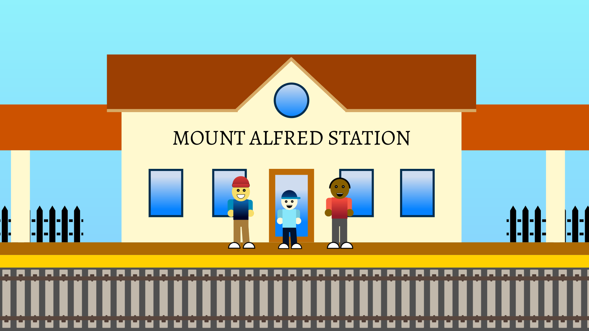
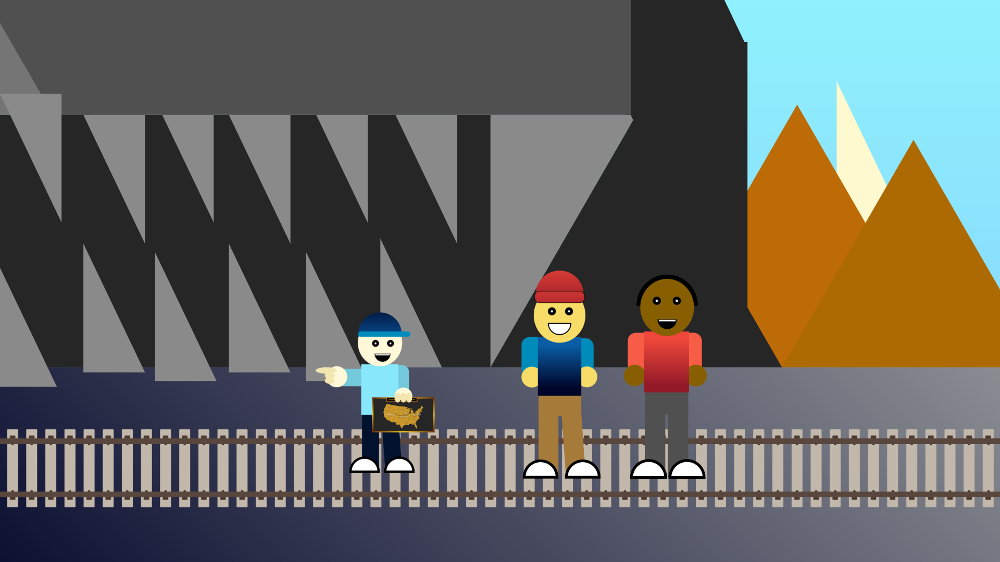
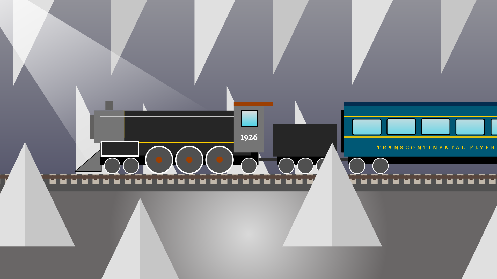

Chapter 1 — The Old Station
Felix, Fred, and Rich arrive at an abandoned railroad station outside Mount Alfred.
The station is silent. Dust covers the platform, and an old railroad sign hangs above the entrance.
Felix: "I've never seen a station this old."
Fred: "Are you sure we're supposed to be here?"
Rich: "Look. There's something written on the sign."

Chapter 2 — The Journal and the Map
Inside the station, Felix discovers an old railroad journal. Its final entry describes a train heading toward the mountain.
Felix: "This must be the first clue."
Fred: "Then we need to figure out where it leads."
Rich: "There's a map inside the cover."
The map points toward an abandoned railroad tunnel deep in the mountains.
Felix: "The tracks disappear right here."
Fred: "That's where the tunnel should be."
Rich: "Then that's where we're going."

Chapter 3 — The Tunnel
The three friends enter the forgotten tunnel. Their flashlights reveal an old set of tracks.
Fred: "These tracks look untouched."
Felix: "The journal said the train came this way."
Rich: "Then we're getting close."

Chapter 4 — The Brass Key
At the end of the tunnel, Felix discovers a small brass key hidden beneath an old railroad marker.
Felix: "I found something."
Fred: "A key?"
Rich: "There must be a lock nearby."

Chapter 5 — The Hidden Chamber
The key opens a hidden entrance leading deeper into the mountain.
Felix: "What is that sound?"
Fred: "It sounds like a train."
Rich: "We found it."